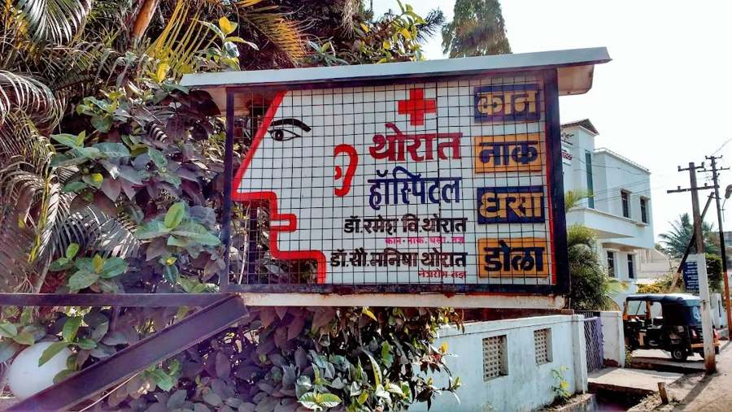

Thorat ENT & Eye Hospital
थोरात हॉस्पिटल
Est. 1990 स्थापना १९९०
Ear, nose and throat consultation and surgery, and eye care.
463/3, Shaniwar Peth, Karad.

Walk in, no appointment needed
Monday to Saturday, 10 am–3 pm and 5–8 pm. Closed Sunday. Patients are seen in order of arrival.
अपॉइंटमेंटची गरज नाही
सोमवार ते शनिवार, सकाळी १० ते दुपारी ३ आणि सायंकाळी ५ ते रात्री ८. रविवारी बंद.
Services
सेवाEar, nose and throat
कान, नाक, घसा
Consultation and treatment
- Ear infections, ear wax and ear discharge
- Hearing loss
- Sinus problems, nasal blockage and allergies
- Throat infections, tonsillitis and voice problems
Surgery
- Functional endoscopic sinus surgery (FESS)
- Tonsil and adenoid surgery
- Ear surgery
- Nasal septum surgery
- Thyroid surgery
After surgery
- Post-operative care and follow-up
Eye
डोळे
Consultation and in-clinic treatment
- Eye check-ups
- Vision testing and glasses prescriptions
- Eye infections and red, watering or itchy eyes
- Removal of foreign bodies from the eye
Eye surgery is not offered at present.
Doctors
डॉक्टर-
Dr. Ramesh V. Thoratडॉ. रमेश वि. थोरातENT surgeon
- MBBS
- Solapur
- DORL
- Pune
- MNAMS (ENT)
- Pune, 1990
- In practice
- Since 1990
- Registration
- Maharashtra Medical Council no. 60438 (confirm)
-
Dr. Shruti Thoratडॉ. श्रुती थोरातENT surgeon
- MBBS
- Ahilyanagar
- MS (ENT)
- Pune, 2026
- Registration
- Maharashtra Medical Council no. [ ]
-
Dr. Manisha Thoratडॉ. सौ. मनिषा थोरातOphthalmologist (eye)
- MBBS
- Miraj
- DOMS
- Solapur, 1993
- Registration
- Maharashtra Medical Council no. [ ]
Address and hours
पत्ता व वेळ463/3, Shaniwar Peth
Karad, Maharashtra 415110
Next to Shinde Hospital ४६३/३, शनिवार पेठ, कराड ४१५११० (शिंदे हॉस्पिटलच्या शेजारी)
| Monday to Saturday | 10 am–3 pm 5 pm–8 pm |
|---|---|
| Sunday | Closed |
Common questions
नेहमीचे प्रश्नDo I need an appointment?अपॉइंटमेंट लागते का?
No. Come during working hours and you will be seen in order of arrival. To check that a particular doctor is in that day, call 98222 62629.
Which doctor should I see?कोणत्या डॉक्टरांना भेटावे?
For ear, nose, throat, hearing, sinus, tonsil, voice or thyroid problems, see Dr. Ramesh Thorat or Dr. Shruti Thorat. For vision, glasses, red or painful eyes, or something in the eye, see Dr. Manisha Thorat.
Is ENT surgery done here?कान, नाक, घशाची शस्त्रक्रिया इथे होते का?
Yes, including sinus surgery (FESS), tonsil and adenoid surgery, ear surgery, nasal septum surgery and thyroid surgery, with post-operative care and follow-up. Whether you need surgery, and its risks, is discussed after examination.
Is eye surgery done here?डोळ्यांची शस्त्रक्रिया इथे होते का?
Not at present. Eye check-ups, vision testing, glasses prescriptions and in-clinic treatment, such as removing a foreign body from the eye, are available.
What should I bring?सोबत काय आणावे?
Previous prescriptions, test reports or scans, a list of the medicines you take, and your glasses or hearing aid if you use one.
Something has gone into my eye. What should I do first?डोळ्यात काही गेले तर आधी काय करावे?
Don't rub the eye or try to pull out anything stuck in it. Rinse gently with clean water, then come in or go to the nearest hospital as soon as you can.